Södermalm i tid och rum
Heleneborg Ur Malmgårdarna i Stockholm, Birgit Lindberg, 1985
Denna malmgård är belägen där Söder Mälarstrand svänger upp mot Västerbron. Den är skamfilad, fråntagen all sin forna prakt där den ligger på parkmark ruvande nedanför hyreshusen. Huset är i stort behov av reparation och även den s k Pålsundsparken behöver rustas, men den rymd som huset skulle behöva är tyvärr för alltid borta.
|
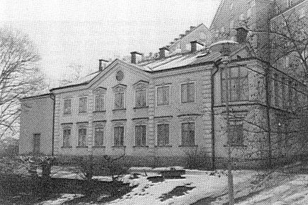 |
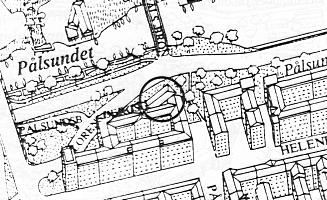 |
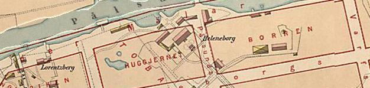
1885
Karta 1731 Karta 1805
Karta 1836 Karta 1861
Karta 1902 Karta 1953
{kind=link}
{kind=link}
{kind=link}
{kind=link}
{kind=link}
{kind=link}
Jonas Andersson kom från borgmästarhemmet i Norrköping till Stockholm i unga år och tog då
namnet Östling. Efter att ha varit ute i olika fälttåg i både Tyskland, Polen och Danmark blev han
1660 adlad med namnet Österling. Han köpte då en tomt "vid sundet gentemot Långholmen" som var
"mestadels berg och oländig mark". Hans tomt var 163 765 kvadratalnar (ca 57 320 m2). Området
begränsas av Pålsundet, Varvsgatan, Högalidsgatan och Pålsundsgatan. 1672 hade han där byggt en
manbyggnad på två våningar och två flyglar på en våning. Därtill byggdes stall, smedja och
ekonomibyggnader.
Österling och Tobakskompaniet hade överenskommit att på Österlings tomt uppföra en ny anläggning för kompaniets räkning. Den gamla fabriken i "staden" hade nämligen brunnit ned. För hela detta projekt med malmgård, spinneri och tobaksnederlag anlitades som arkitekt Johan Tobias Albinus.
|
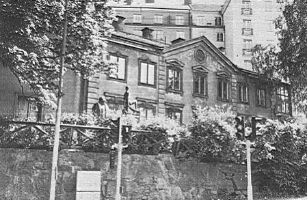 |
Det var inte bara huset som blev pampigt. Österling lät anlägga en trädgård, som tydligen
också var sevärd, eftersom den enligt Munthe (1956), omtalas som "Österlings Garten bei der
Tobaksspinnerei belegen". Han hade tydligen allt som hörde till en dåtida malmgård. Tobaken
som han odlade och som senare fick namnet "skinnarvikshavannan" växte mellan nuvarande
Högalids- och Helenbeborgsgatorna. Hans sex karpdammar med 800 karpar låg i anslutning till
odlingarna och hans väderkvarn låg inom nuvarande Högalidskyrkans område.
Detta var en tid av "lätt fanget lätt förgånget". Många ur den "merkantila adeln" förlorade sina rikedomar genom Karl XI:s hårda politik. Så även Österling. |
Så stod gården tom. "Vanartigt folk fingo lägenhet att skövla", sägs det. Kanske var det inte så underligt att malmgården brann ned år 1701.
Landshövding Mårten Lindhielm blev ny ägare, men först 1721, då riksrådet greve Magnus Julius de la Gardie köpte egendomen, rustades och tillbyggdes de avbrända husen och nyanlades trädgården med bl a 206 fruktträd. Troligen bodde han inte här.
|
1739 sålde han husen och ägorna till rådmannen Olof Forsberg och fabrikören Olof Carl Aspegren,
som här startade ett pipbruk. Då kallades nuvarande Varvsgatan för Pipbruksgränd. Eftersom
kritpipor, som gjordes av holländsk lera, är en förgänglig artikel, tycks produktionen ha varit mycket
stor - 7 300 gross/år. Därjämte fanns den stora trädgårds-, frukt- och grönsaksodlingen kvar. Nästa ägare - från år 1759 - var det beryktade bergsrådet Adolph Christiernin, som gav egendomen namnet Heleneborg efter sin maka. Till dess hade malmgården kallats "Österlingska tomten". Det märkliga är att fyra hustrur till Heleneborgsägare hette Helena. Tydligen ett mycket populärt namn. |
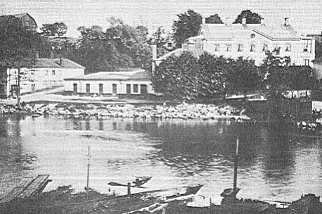 Heleneborg från Långholmen omkr 1900 |
Christiernins ryktbarhet bestod i att han lade ner hela sin förmögenhet i att utvinna guld ur silvergruvorna i Kopparbergs län, vilket ledde till att han 1796 gjorde konkurs. Han hamnade på bysättningshäktet, nuvarande "Gamla Bysis", Hornsgatan 82 b. Från denna tid finns den första brandförsäkringen och en utförlig lantmäterikarta, som visar alla hus och deras belägenhet. Utöver huvudbyggnaden fanns ett långsmalt stenhus, ett mindre stenhus, två korsvirkeshus, brygghus, mangelbod, ladugård, vagnshus, fähus, drivhus, lusthus och flera bodar och uthus. Det var alltså en stor och utomordentligt vacker egendom med en nedre och en övre trädgård och därtill anslutning fram till nuvarande korsningen av Varvsgatan och Lundagatan.
|
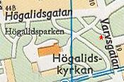 |
Grindstugan byggdes antingen, enligt uppgift i stadsarkivet, av bergsrådet Hans Detloff Heijkanskiöld, som 1768 "tänkte" uppföra ett hus i kvarteret Tobaksspinnaren, eller av Kungl sekreteraren Johan Axel Een, som 1795 lät brandförsäkra en av honom uppförd portbyggnad. Een tillträdde Heleneborg år 1788. Mellan dessa två ägare fanns två andra, grosshandlare Jean Hultman och Carl Gustaf Herpel. |
|
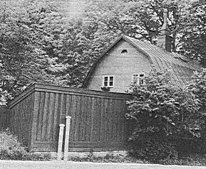 Många ägare hinner byta av varandra under dryga 300 år. Nästa i raden är grosshandlare Jakob Schmidt, som köper ägorna 1801 och låter arkitekten och akvarellmålaren Pehr Estenberg rusta byggnaden 1809, vilket den är i stort behov av. |
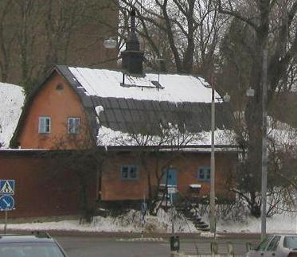 |
1812 övergår alltsammans till prostinnan Maria Catharina Strömvall (f Schmidt). Från den tiden vet vi att ägorna till en tredjedel är obrukbara och till två tredjedelar odlad jord - fruktträdgård, grönsaksland och beteshagar.
Malmgårdstiden går nu mer och mer mot sitt slut och industritiden bryter in i och med att nästa ägare, fabrikör Anders Broman, tillträder år 1815. Han startar ett cattunstryckeri på tomten.
|
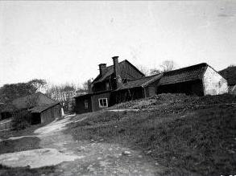 Gård söder om Heleneborg 1910
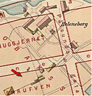
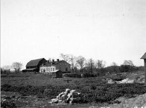 1910
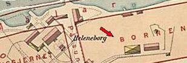 |
Åren 1818-26 ägdes både Jakobsberg och Heleneborgs malmgårdar av Israel Adolf af
Ekenstam. Industrialiseringen utvecklades under dessa år mer på Jakobsberg för att ta ny fart igen
på Heleneborg, då släkten Lamm tillträdde år 1826. Från detta år fram till 1861 var här många
aktiviteter.
Vid sidan av alla verksamheter på Heleneborgssidan drev Salomon Ludvig Lamm också varvs- och rederirörelse på Långholmen. Han arrenderade nämligen det vi kallar för Mälarvarvet redan år 1827. Som arbetsgivåre var han före sin tid. Han inrättade koleraåret 1834 ett sjukhus för sina Heleneborgsarbetare och en sjuk- och begravningskassa för sina varvsanställda. Ur denna enorma verksamhet utvecklades så småningom Ludvigsbergs mekaniska verkstäder.
På kvällen den 3 september 1864 kunde man i Posttidningen läsa: "dånet av en fruktansvärd explosion och en tjock gul rök steg upp från trakten av Pålsundet". Det var Nobels laboratorium som flugit i luften och skadorna var ansenliga. Fem människor dödades, däribland Alfreds bror Oskar Emil Nobel. Experimenten måste gå vidare, först på en pråm på Mälaren, men redan 1865 är han igång i nya byggnader vid Vinterviken. |
Nästa gång Heleneborg renoveras är det arkitekten Johan Fredrik Åbom som får uppdraget av kaptenen och stadsfullmäktigeledamoten Johan Adolf Berg, som då innehaft den gamla gården i ett år. Det utseende som gården fick då har den än i dag.
Berg var en stor konstsamlare och hade en stor kollektion tavlor, som år 1880 omfattade 190 nummer. Vid hans död 1894 värderades dessa till 97 210 kronor, vilket enligt nutida bedömning var alldeles för lågt. Många av tavlorna kom från Spökslottet på Drottninggatan, och dit har de återgått vid en donation som Berg gjorde till Stockholms Högskola. Han inrättade också en professur, och den förste som innehade den var Viktor Rydberg, som han var god vän med. Rydberg bodde för övrigt på Heleneborg vinterhalvåret 1889-90. Gården låg då i en av Stockholms mest industrialiserade utkanter.
{kind=link}